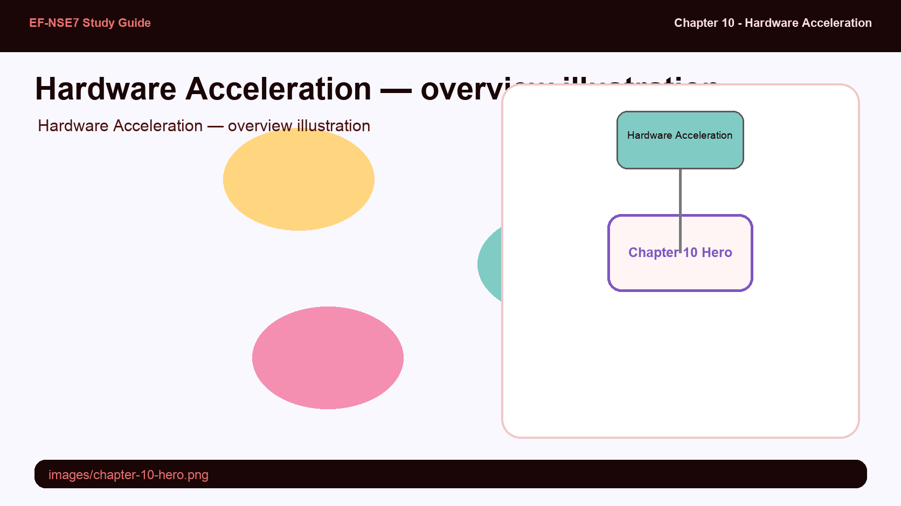
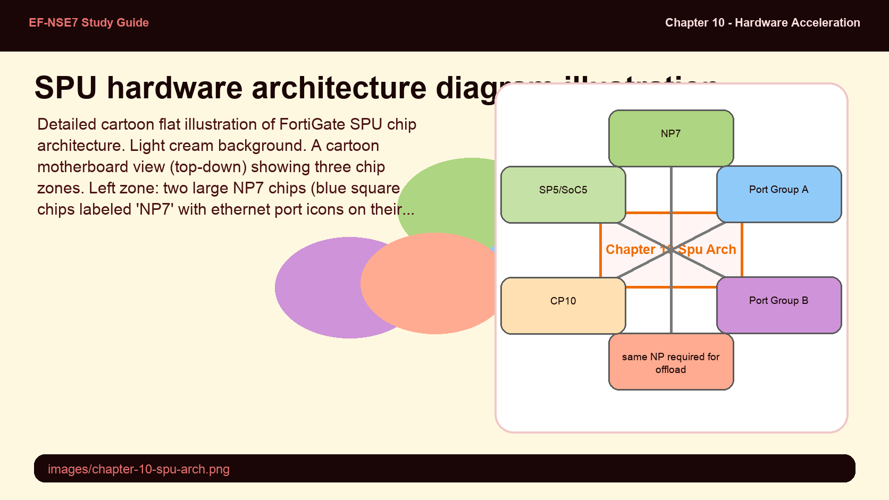
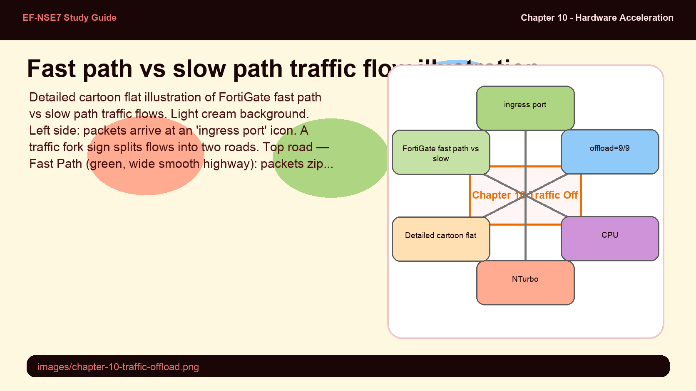

Hardware Acceleration
Leveraging NP, CP, and SP processors to offload traffic from the CPU and maximize FortiGate throughput

Detailed cartoon flat illustration of FortiGate hardware acceleration architecture. Light cream background. A cross-section view of a cartoon FortiGate appliance (red boxy device, lid open showing internal components). Inside, three processor characters work as a team: NP7 (a fast blue sprinter character with lightning bolt shoes labeled 'NP7 — Network Processor', handles fast-path forwarding); CP10 (a focused analyst character with magnifying glass labeled 'CP10 — Content Processor', handles crypto/SSL); SP5/SoC5 (a compact all-in-one robot labeled 'SP5 — Combined NP+CP', for smaller models). Traffic packets enter from the left as a cartoon queue line. Most packets (labeled 'Fast Path') zip through the NP7 superhighway without touching the CPU — shown as a green express lane. A few complex packets (labeled 'Slow Path / UTM') detour through the CPU in the center — shown as a winding road with security checkpoints. A CPU character sits in the center looking relieved that most traffic bypasses it. Fully detailed cartoon style, soft flat fills, pastel palette (baby blue, teal, red, mint, cream), bold outlines, white background.
Hardware Offload Architecture
FortiGate's Security Processing Units (SPUs) are purpose-built ASICs that handle specific compute-intensive tasks in hardware, bypassing the general-purpose CPU. The primary SPU types are: NP (Network Processor) — handles fast-path Layer 2/3/4 forwarding, session lookup, and NAT at wire speed; CP (Content Processor) — accelerates cryptographic operations (SSL/TLS, IPsec) and signature matching; SP/SoC (System-on-Chip) — combines NP and CP functions in a single die for mid-range/SMB models.
Current generation: NP7 (FortiGate 900G and above, 12M sessions, PCI ID 0x4e37) replaces NP6 (PCI ID 0x4e36 — identifiable via lspci). CP10 ships in FortiGate 200G+. SP5/SoC5 ships in FortiGate 90G — a combined NP+CP lite for the smaller form factor. NP direct architecture (introduced with NP7) eliminates the Internal Switch Fabric (ISF) — ingress and egress ports must be on the same NP chip for hardware offloading to occur. This is a critical design constraint: traffic crossing different NP chips reverts to CPU processing.

Detailed cartoon flat illustration of FortiGate SPU chip architecture. Light cream background. A cartoon motherboard view (top-down) showing three chip zones. Left zone: two large NP7 chips (blue square chips labeled 'NP7' with ethernet port icons on their edges), connected directly to port groups (labeled 'Port Group A' and 'Port Group B'). A dashed red boundary shows 'same NP required for offload'. Center zone: one CP10 chip (teal chip labeled 'CP10') connected to the NP7s via bus lines, with padlock and cipher icons floating above it. Right zone: a small SoC5 chip (mint chip labeled 'SP5/SoC5') showing it combines both NP and CP in one smaller die. A CPU chip (beige, labeled 'CPU') sits in the corner, connected via a slow lane labeled 'Slow Path'. Green express lanes labeled 'Fast Path / NP7' bypass the CPU. Packet icons flow along both lanes. Fully detailed cartoon style, pastel palette (blue, teal, mint, cream), bold outlines, white background.
Traffic Offload to SPU
When a new session arrives, FortiOS makes a fast-path/slow-path decision. Fast path (NP): the session is handed to the NP for hardware forwarding — the CPU is not involved after the initial session setup. Session table shows offload=9/9 (NP7) for fully offloaded sessions. Slow path (CPU): sessions requiring UTM inspection (IPS, antivirus, application control) must be processed by the CPU's IPS engine — the NP cannot inspect application-layer content.
NTurbo bridges this gap for flow-based UTM — it allows the NP to offload the network forwarding portion of UTM sessions while sending traffic to the IPS engine for inspection. The NP handles the packet I/O at wire speed; the CPU handles only the content inspection. IPSA (IPS Acceleration) offloads pattern-matching portions of IPS signatures to the CP chip, reducing CPU load for signature-heavy traffic. Configurable via np-accel-mode {none|basic} and cp-accel-mode {none|basic|advanced}. auto-asic-offload can be disabled per firewall policy (set auto-asic-offload disable) for troubleshooting or when offload is incompatible with specific features.

Detailed cartoon flat illustration of FortiGate fast path vs slow path traffic flows. Light cream background. Left side: packets arrive at an 'ingress port' icon. A traffic fork sign splits flows into two roads. Top road — Fast Path (green, wide smooth highway): packets zip through an NP7 chip (blue chip character giving a thumbs up) directly to the egress port — no CPU involved. Sign above: 'offload=9/9'. Bottom road — Slow Path (orange, winding road): packets take a detour through a CPU (beige chip with graduation cap labeled 'CPU'), passing through IPS inspector booth, Web Filter booth, and App Control booth, then continue to egress. A small side road labeled 'NTurbo' shows packets going to IPS via CP10 while NP handles the I/O — a partial offload. Gauges on the right show: Fast Path: 99% utilization at max throughput; Slow Path: 40% utilization (CPU bottleneck). Fully detailed cartoon style, pastel palette (green, orange, blue, cream), bold outlines, white background.
Hardware Acceleration Configuration
The primary control for hardware offloading at the policy level is set auto-asic-offload {enable|disable} in each firewall policy. Enabled by default — disable only for specific troubleshooting scenarios or when using features incompatible with offloading (such as certain traffic shaping configurations). Verify offload status with diagnose sys session list — look for offload=9/9 (NP7 offloaded), offload=0/0 (CPU, not offloaded).
Inter-VDOM acceleration uses npu_vlink0/npu_vlink1 — virtual link interfaces that allow hardware offloading of inter-VDOM traffic. Unlike software VDOM links (which go through the CPU), NPU VDOM links route traffic through the NP chip. For VLAN-carrying inter-VDOM scenarios, configure the same VLAN ID on both npu_vlink0 and npu_vlink1 endpoints. Verification commands: diagnose npu np7 port-list, diagnose hardware deviceinfo nic <port>, and lspci to identify chip types. Life-of-a-packet analysis traces a session through FortiOS processing stages to confirm where offloading occurs.